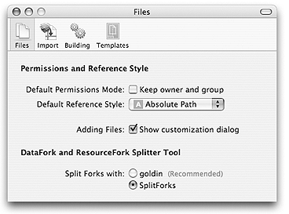
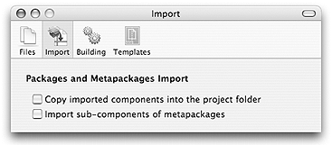
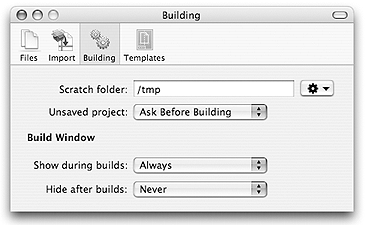
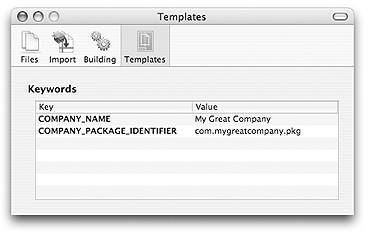

This document describes the preferences of the Iceberg application and how to change them.
Files
When you add a file or folder in the file hierarchy of a package, a dialog asks you to specify:
If you have Carbon applications in your files hierarchy, you may need to split their Data Fork and Resource Fork. Apple is providing a tool named SplitForks for this task. Iceberg is providing a tool named goldin. You may select which tool to use to split forks during the build process.
To keep or not keep the owner and group by default:
| 1 | Choose Iceberg > Preferences… . |
| 2 | Click Files. |
| 3 | Select or unselect the checkbox labeled Keep owner and group. |
To change the default reference style:
| 1 | Choose Iceberg > Preferences… . |
| 2 | Click Files. |
| 3 | Choose the reference style from the Default Reference Style pop-up menu. |
To display or not display the customization dialog:
| 1 | Choose Iceberg > Preferences… . |
| 2 | Click Files. |
| 3 | Select or unselect the checkbox labeled Show customization dialog. |
To change the split forks tool:
| 1 | Choose Iceberg > Preferences… . |
| 2 | Click Files. |
| 3 | Select the tool name in the Split Forks with radio buttons list. |

Iceberg can import an already built component into a project. It is possible to change the default behavior of the import process with the following two options:
To enable or disable the copy of components when importing them:
| 1 | Choose Iceberg > Preferences… . |
| 2 | Click Import. |
| 3 | Select or unselect the checkbox labeled Copy components when importing. |
To enable or disable the import of the components of metapackages:
| 1 | Choose Iceberg > Preferences… . |
| 2 | Click Import. |
| 3 | Select or unselect the checkbox labeled Import metapackages components. |

When you build a package, the file hierarchy of the archive is created in a temporary folder: the scratch folder. By default, the
scratch folder is the /tmp folder. The creation of the hierarchy might require a lot of disk space (if you are building a
big file hierarchy), you may want to choose another location for the scratch folder, for instance on an external drive.
When you build a project, you can choose to have the modifications made to the project be automatically saved or not before launching the build. You can also choose to be asked what to do whenever you build the project. By default, projects are not being saved before build.
When you build a project, you can choose to automatically display the build log window or not. In the same way, you can choose to automatically hide it not.
To change the location of the scratch folder:
| 1 | Choose Iceberg > Preferences… . |
| 2 | Click Building. |
| 3 | Choose Choose… from the Scratch folder pop-up menu. |
| 4 | Select the new scratch folder and click Choose. |
To enable or disable the saving of projects before building them:
| 1 | Choose Iceberg > Preferences… . |
| 2 | Click Building. |
| 3 | Select the appropriate behavior from the Unsaved project pop-up menu. |
To show the build log window:
| 1 | Choose Iceberg > Preferences… . |
| 2 | Click Building. |
| 3 | Select when to show the Build log window from the Show during builds pop-up menu. |
To hide the build log window:
| 1 | Choose Iceberg > Preferences… . |
| 2 | Click Building. |
| 3 | Select when to show the Build log window from the Hide after builds pop-up menu. |

The template keywords list lets you specify which value shall be associated to a keyword when you create a new project using a project template.
To change the value associated to a keyword:
| 1 | Choose Iceberg > Preferences… . | ||
| 2 | Click Templates . | ||
| 3 | Select the row of the value to modify. | ||
| 4 | Double-click the value. | ||
| 5 | Type the new value and press Return.
|